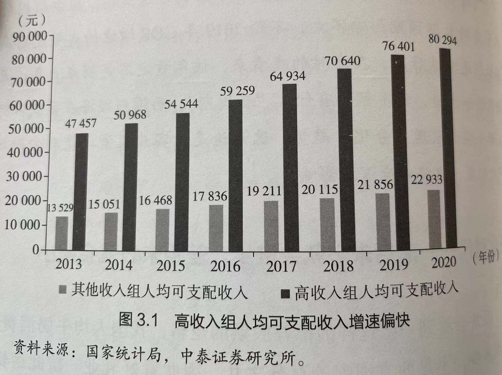

第一章 全球经济步入下行周期：长期和平的利弊及因果律
为什么全球经济将步入高震荡低增长模式
全球经济接力赛缺乏接棒者 5 纵观历史，全球性的制造业转移，从欧洲到美国，再从欧美刀日本和"亚洲四小龙"，20世纪90年代后大规模转移到中国。如今，虽有部分产业从中国转移到越南、印度尼西亚、印度等国，但总量并不大。并不是说这些国家没有转移的需求，而是缺乏承接力。中国是一个技术配套、市场容量、劳动力和基础设施已经相当完备且成体系的经济体，这是其他国家所难以取代的。
和平环境下的结构性问题固化——改革知易行难 6 从历史数据看，资本的收益率总是大于经济增长率，而工薪阶层的收入增长率与经济增长率相一致，这样一来，贫富差距就扩大了，并导致阶层固化。因此，他的主张是向资本课税以缩小贫富差距。但问题在于，对资本课税会改变固有的利益格局，带来抵触或资本外逃，反过来又会影响经济的稳定，这就是改革的两难之处。
实际上，资本收益率高于薪酬增长率的问题，不仅导致了国内的收入分配不均，还导致了发达国家与发展中国家之间的收入分配不均。因为发达国家靠输出资本来获得投资回报，而发展中国家通过提供劳动力来获得薪酬收入，两者之间同样存在差异和资本"掠夺"的现象。
7 因此，需要辩证地去看历史，和平固然你值得珍惜，但也并非全是美好的。在和平的环境下，人类逐利的游戏在制度的保障下得以持续进行，其最终结果必然是少数人拥有绝对多数的财富，少数国家获得绝对多数的利益。在和平环境下，无论是游戏规则还是利益格局，都很难推到重来，因为改革需要付出很高的成本。随着时间的推移，旧的问题不仅没有解决，新的矛盾又在堆积，于是讲究会发生冲突；随着冲突不断升级，往往会爆发战争，无论是局部的还是整体的。
利益格局被打破——动荡不可避免 8 后来，加拿大经济学家克拉克据此画出一条"了不起的盖茨比曲线"，它说明了这样一种社会经济现象：高度不平等的国家具有较低的代际流动性，即社会越不平等，个人的经济地位就越由父母的地位决定，子女处于父辈的经济阶层的可能性就越高。
从2021年政策取向看资本市场的分化与投资机会
2020年中央经济工作会议要点 12 政策的出台往往具有滞后性，与股市恰好相反，股市总是超前反应。
17 2020年的消费分化很明显，高端消费、奢侈品消费的增长都非常突出，高端白酒的销量增长在10%以上，但白酒的整体产量却下降了2.5%。同时，2020年豪华乘用车销量增长了约15%，而普通乘用车销量为-16%。从奢侈品来看，2020年中国的消费在全球表现非常抢眼，估计约占全球奢侈品消费份额的40%，这是非常惊人的数字，这种消费分化的背后其实就是收入的分化。
18 传统经济中不少行业的从业人员都是中低收入者，而新经济行业的从业人员多是高薪收入者。于是收入差距可能会进一步扩大。
19 虽然这些大企业大肆扩张带来了新经济份额和就业规模的提升，但是当前中国的存量经济特征日益明显， 存量经济变化更多体现为"切蛋糕"，而不是把"蛋糕做大" 。如果是"切蛋糕"，那么问题就来了，比如互联网企业由于业务创新，可以提供1000个新增就业岗位，但这种业务创新同时又挤占了其他实体店的生意。
2020年有很多实体店倒闭，上海店铺的租金率也在大幅下降，可能进一步导致更多人失业。实际上，中国就业与GDP之间存在这样一种关系：GDP每上升一个百分点，就会带来约200万人的新增就业，但如果GDP每下行一个百分点，可能会导致约300万人失业。因为，现在的新增就业统计不是指净就业，所谓净就业就是指新增就业减去新增失业，但是实际上新增数据只包含了新增就业，却没有包含新增失业，所以这个数据还是值得商榷的。
2021年的投资机会 22 中国的结构性牛市是从2017年开始的，2018年由于大环境不佳，股市出现大幅调整，2019年和2020年依然还是符合机构投资者价值理念和投资套路的结构性牛市。这种估值体系调整的结构性牛市估计今后还会持续下去。这与美国市场其实是非常相似的，市场越来越呈现"二八现象"，即20%的股票在上涨，80%的股票在下跌，这就是结构性牛市的特征之一。
. 然而，随着越来越多的海外机构资金进入A股市场，由于这些海外结构使用DCF模型（现金流折现模型）来进行估值的，所以一看就发现A股市场中的大蓝筹股明显偏低。近年来这类公司的估值水平持续提升，估值驱动的行情在今后几年还会持续下去。
23 因为中国经济已经慢慢从投资驱动转为消费驱动，随着人口老龄化和居民收入水平的提高，消费升级也是必然的。因此，大消费板块的表现依然是比较强劲的，今后也还会持续下去。
其实美国也是一样的，比如说食品饮料、医药生物、新能源汽车等大消费板块，高科技板块，互联网板块这几年的走势一直很强劲。而欧洲、日本同样也是这些板块的走势比较强劲。
. 因此，国家提出要发展九大战略性新兴产业，包括新一代信息技术、生物技术、新能源、新材料、高端装备、新能源汽车、绿色环保、航空航天、海洋装备。另外，也要注重基础研究和原始创新，国家瞄准了八个领域的一些基础研究和研发投入，主要是人工智能、量子信息、集成电路、生命健康、脑科学、生物育种、空间科技、深地深海。
资本市场的机构投资者比重还会提升，今后机构的话语权还会增加，所以未来的主要机会也就集中在排名前20%左右的股票上。因为整体经济在分化，经济分化主要表现为向头部集中。目前我国的各个行业集中度并不算高，但今后的集中度会进一步提高。 所以还是要配置头部企业。
24 2021年，随着经济复苏，顺周期行业可能会出现一轮相对短线的机会，即所谓的周期性行业。因为现在全球库存都处于一个比较低的状态，所以2020年下半年以后大宗商品的交易价格明显走强，主要还是有一个补库存的需求，另外复工、复产的需求也明显增加。欧盟也好，美国也好，虽然经济还处于负增长，疫情在蔓延当中，但是它们的制造业PMI指数（采购经理指数）都已经在持续走强了。
从流动性角度看经济减速下的投资机会
27 从本质上讲，把钱借给有偿还能力的人，就是银行等金融机构的盈利模式。如今全球普遍遇到的难题是：融资需求最多的是穷人，但给穷人贷款的风险大，如美国的次贷危机；给富人贷款安全性高，但富人的融资需求有限。
28 于是结构性问题愈加严重，包括人口结构、收入结构、产业结构、区域结构等。
因此，除了克鲁格曼的广义货币（M3、M4）流动性来反映信息和预期，我们还可以从 货物、人口及信息的流动性方面来反映经济结构性问题。
. 从实际个案看，耐用消费品中的两大主要商品——汽车和智能手机都进入了负增长时代。2013年，我国每百户家庭的乘用车拥有量为16辆，仅相隔5年，到2018年就增加至33辆。因此，从爆发式增长到负增长，表明中短期的乘用车消费饱和了，智能手机也是如此。
29 又如，2020年实物消费网购增速为14.8%（主要受新冠肺炎疫情影响），即使不考虑2020年，2019年也降至19.5%，与过去50%的超高增速相比，下降了一半以上；再从进出口贸易的增速看，均出现了下降。推而广之，这些商品或项目的销售增速下降，意味着货物流高增长时代的结束，货物的流动性已经在衰退。
从人口流动性看，从2011年起，城镇化速度明显放缓，过去城镇化率平均每年提高1.4个百分点，2019年这一数据已降到1.0个百分点。农村剩余劳动力转移基本宣告结束，且进城务工人员趋于老龄化，2019年50岁以上的进城务工人员占比从2008年的11%上升至25%，30岁以下的进城务工人员占比从46%降到25%，2019年新增进城务工人员数量仅为241万。
此外，国家统计局还公布了每年的流动人口余额数据，2014年流动人口数量达到2.53亿的峰值，之后逐年回落，2019年已经降到2.36亿。人口流动性的下降，既是经济现象，即经济增速与就业机会相关，经济增速下降，第二产业和第三产业的就业机会也会减少，人口迁徙速度放缓；又是社会现象，即人口老龄化，2019年东部地区进城务工人员数量减少了108万，其中相当多的人回到了家乡。
最后再看信息流动性。相关的评价指标有很多，这里仅以移动互联网数据为例，这一数据应该颇具代表性。QuestMobile（北京贵士信息科技有限公司）的数据显示，2019年上半年，移动互联网用户净减少200万，11.38亿就是大顶（即峰值）。此外，寒意更浓的是用户时长，从2018年12月到2019年3月，用户时长增速从22.6%降到11.8%，到了2019年6月，增速已经滑至6%。
30 综上所述，从货币流、货物流、人口流和信息流这四大流看，均面临着减量或减速的局面。这也从四个侧面对我国经济增速下行给予了合理解释。
投资相对论：流动性的机会在哪里 . 进入流动性衰减的存量经济时代，在进行投资分析时至少需要具备三种思维，一是分层思维，二是结构思维，三是此消彼长思维。
分层思维所对应的投资选择，应该是"抓大放小"和"重高端轻低端"。
. 与欧美等西方发达国家相比，当前我国大部分行业的集中度仍偏低，未来还存在很大提升空间。
. 从消费层面看，消费增速由居民收入增速决定，近些年收入增速的下行导致消费增速下行。且居民收入也出现了分层现象，即高收入组的收入增速降幅较小，中低收入组的收入增速降幅较大。
31 而且，长期来看资本的回报率大于薪酬增速，由于对高收入阶层征税的难度较大（如房产税、资本利得税），收入差距扩大趋势还讲持续。因此，就投资选择而言，高端消费品或服务应该更有投资价值。
. 结构思维下的投资策略，除了货币流动性充裕的领域值得被关注外，货物流、人口流和信息流也可以成为投资选择的依据。
. 在权益资产方面，无论是央企还是民企，大型或超大型的企业基本都集中在北京、长三角和珠三角等地区，如金融、互联网、制造业、房地产等行业的头部企业。
. 在增量经济下，出现资产价格普涨的概率比较大；在存量经济下，结构性上涨和下跌同时出现，即此消彼长。因此，在增量经济下，即便配置了"劣质资产"，也可能会上涨；但在存量经济下，当核心资产上涨时，非核心资产或会下跌。
32 降息或量化宽松，都属于总量政策，对当前各国长期形成的结构固化问题难以奏效，而由此带来的无风险利率下行，对于核心资产（或安全资产）的估值水平提升反而是有利的，对风险型资产的估值却无多大影响。
货币政策究竟如何影响股价
33 虽然货币政策工具非常多，但调控不外乎两个方向发挥作用，一是价格即利率，二是数量即货币流动性，且量与价之间又相互关联。通常说，货币政策趋松，则货币供应量增速加快或利率下行；反之，货币供应量增速放缓或利率上行。一般而言，前者有利于股市上涨，后者则致股市下跌。
34 定量分析货币政策对股价的影响程度，尤其是单一地以基准利率调整来判断股市走势更难，原因可能有两个：一是货币当局对利率调整的频度较低，即对价格工具运用的频度远低于数量；二是我国利率市场化程度有一个逐步提高的过程，单一地用基准利率波动曲线与股市的市盈率（P/E）波动曲线做比较的意义不大。
因此，大部分研究者更喜欢用货币供应量的变化来分析其与股价的相关性并预测股市走势。我们认为货币超发现象（M2增速与名义GDP增速之差长期大于零）之所以没有导致CPI的大幅上涨，是因为金融业和房地产业等吸纳了大部分超发货币。
我们把飞雪方程式做了变换，即：
其中，\(M\) 表示货币供应量，\(V\) 表示货币流通速度，\(P\) 表示总体价格水平，\(Q\) 、\(Q_1\) 、\(Q_2\) 、\(Q_3\) 、\(Q_4\) ...... 分别代表最终产品和服务数量、一般消费品和一般服务数量、高收入群体购买的奢侈品和奢华服务数量、金融资产的数量、实物资产（主要为购房）的数量等，而:math:P_1 、\(P_2\) 、\(P_3\) 、\(P_4\) ...... 都是与之对应的价格。
通过上述的公司变换，大致可以解释中国货币超发但为引发CPI大幅上行的原因：一方面，日益扩大的收入差距使得这些货币但大多流入高净值群体手中；另一方面，中国从1990年开始有了股市和债市，从2000年起房地产市场化带来楼市的繁荣，导致 \(Q_3\) 、\(Q_4\) 的规模大幅上升，从而造成大量的货币流向金融市场和房地产市场。
37 如果说前些年金融创新的蓬勃发展使得货币分流到各种金融产品的规模扩大，并导致货币规模的变化与股价间的关系弱化。那么如今金融监管的加强对股市而言又是一个新变数，即股市的市场属性趋弱，调控的痕迹趋强，所以通过货币供应量的变化来预测股市走势就更难了。
多维度分析货币政策对股市的影响 40 总之，随着A股市场机构投资者的比重的增加以及境内外股市双向开放度的提高，A股价格回归理性估值的长期趋势已经形成，因此，货币政策对股市的影响趋弱。
经济下行压力与股市上行动力
42 西方发达经济体的增长大部分靠内涵式增长，中国经济则主要靠投资这一外延式扩张来实现，从而使得投资对GDP的贡献度远超全球平均水平。
内涵式增长模式下，增速上行意味着企业的盈利能力改善，从而带动股指上行；在外延式扩张模式下，企业的ROE水平未必能全面提升，但企业的数量或规模可以扩大。
43 全球主要股市的估值波动并不明显，而沪深300估值的市盈率中位数下限基本在20倍上下，明显要高于其他市场指数的市盈率中位数。
. A股市场估值明显下降，沪深300的市盈率中位数与国际主要指数基本接轨；中证500处于均衡带的上沿，但考虑到成长性的相对优势，其动态估值应该属于合理状态。
46 到2019年末，海外投资者通过陆股通和QFII（合格境外投资机构投资者）持有A股市场股票的市值已经超过股票型公募基金的总规模，境内投资者通过港股通和QDII（合格境内机构投资者）投资海外资本市场也接近这一规模。A股市场的表现与海外市场的联动性明显增强，沪深300指数与标普500指数的相关系数整体呈现抬升趋势。
47 目前发达经济体纷纷减息，不少经济体步入负利率时代，中国经济增速高且稳定，政府管控能力强，汇率稳定，股市和债市的估值水平也较为合理，对境外投资者更有吸引力。在实体经济中的中低端产业外流背景下，我国更需要鼓励资本项下的外资流入，来获得外汇的平衡。
因此，外资流入A股市场，既有境外的巨大需求，又有国内政策层面的优厚供给。中国资本市场作为全球第二大市场，与中国经济作为全球第二大经济体一样，都应该吸引大量外资流入。但外资流入中国实体产业的规模，远大于流入资本市场的规模。今后，外资在中国资本市场上的影响力必然会越来越大。
. 对境外投资者而言，中国市场的投资收益率具有吸引力；对于境内投资者而言，股市或者债市的估值水平，明显低于楼市。这就是今后A股市场值得被看好的理由。
48 当中国经济增速持续下行，分化已经成为趋势时，大部分行业的集中度都在提高，提升最明显的行业有：房地产、信息技术、医疗保健、必须消费品、可选消费品。这意味着今后小公司翻身的难度越来越大，其估值水平还将进一步下降。
. 2008-2020年末，全球的主流股市中，全部股票的中位数涨幅远低于平均数涨幅；跑赢平均数涨幅的股票占比，绝大部分都不超过20%；涨幅排名前10%的股票的涨幅都很惊人。
第二章 资本市场映射宏观大势与结构变化
相信趋势的力量
市场如何演变：长期适用形式逻辑，短期适用辩证逻辑 52 所谓"形式逻辑"，狭义指演绎逻辑，广义还包括归纳逻辑，这里主要是指对估值高低的逻辑判断。也就是说，无论是基于价值低估的逻辑，还是基于成长因素的逻辑，只要是被低估的市场或公司，未来都应该会上涨。反之亦然。
思维决定回报率：博弈还是配置 54 投资者亏损的主要原因不是长期持有，而是频繁交易，即博弈。
. 从配置的角度做投资，为什么能获得更高的收益率呢？首先，它属于中长期投资，可以降低交易成本；其次，通过大类资产配置容易选取有前景的行业，所以投资有机会跑赢市场；最后，配置低估值的投资标的，在逻辑前提不发生根本变化的情况下，短期来看，如遇到熊市，未必能获利，但长期应该能获利。
趋势的力量 56 不少人问我，在全球资产配置时应该配什么，我觉得当然应该配置美股，尽管它已经经历了10年牛市。与买卖股票要买行业龙头一样，美股是全球资本市场的龙头，而且其龙头地位在未来50年估计也难以被撼动。
. 观察当下的诸多传统产业，无论是服务业中的金融和房地产行业，还是制造业中的家电、汽车行业，或者中游的钢铁、水泥行业，都出现了行业分化和集中度提升的趋势，说明传统产业的未来龙头或能给予更高的估值空间。
57 回顾日本、韩国二战后的崛起，它们都是通过大量高端产品出口和资本输出而成为发达国家的。也就是说，中国想要成为发达国家，除了要具备高端制造优势外，还需要输出资本。这就注定中国需要一个全球化的环境，同时，也需要以更加开放的政策来争取开放的全球经济和政治环境。
蓝筹的力量究竟有多大——让岁月来验证
究竟什么样的行业龙头才值得重仓 61 第一，产品具有独特品牌优势和资源稀缺的上市公司。
62 在A股，只要是拥有传统民族品牌的上市公司，都无一例外地具有投资高回报的特征，如五粮液、贵州茅台、泸州老窖、云南白药、同仁堂、东阿阿胶、片仔癀、广誉远等，这或许可以说明， 高回报主要来自品牌所拥有的无形资产价值，经营管理所创造的价值并非最重要 。
第二，具有较大行业发展空间的龙头或次龙头企业受益。
. 第三，民企更具有高成长的潜质，更能给投资者带来高回报。
. 第四，深圳这座城市的市场化理念最深入人心，也是国内行业龙头最多的城市之一。
. 深圳之所以能涌现出这么多行业龙头，与深圳的创业氛围、市场化理念和移民居多的新城市特性有关。
63 第五，高比例现金分红也是行业龙头的一个重要特征。被选为"未来蓝筹"的29家上市公司，2002-2021年累计分红总额为8068亿元，约占同期A股市场上所有上市公司分红总额的9.7%，但29家上市公司数量占所有上市公司数量的历年平均数不足1%。
64 以类似PE的投资方式投资二级市场的优越性远胜过股权投资市场的PE：第一，几乎没有流动性风险；第二，投资血本无归的概率极小，即便没有选中龙头企业，或选中高成长的企业，也可能选中此龙头或次高成长的企业，同样有可能获得搞回报；第三，可以知错就改，时刻拥有主动权。
因此，登高望远，用虔诚之心去寻找蓝筹，执着挖掘持续高增长率的好公司，并坚持长期投资，是获取高投资回报的一条捷径。
山的后面还是山吗
65 这些年来，由于逆周期政策，经济的周期性特征趋弱、结构性特征趋强，因此无论是趋势还是拐点都很难把握。
66 也就是说，预测什么事件会发生，一定得明确该时间发生的时段，否则，注入暴风雨总是会来的、危楼总是会倒塌等语言就毫无意义。除了要标注时段外，预测还需要确定空间位置。
. 对于资本市场的投资者而言，前者叫选时，后者叫选势，时势可以造英雄：只有把握好时机，才能避免亏损，胜券在握；同样，进出点位若能按预测结论操作，不管是选择左侧还是右侧交易，都可以获得高收益。
. 因此，预测必须要说清楚未来事件发生的时间和位置，否则就是在"耍流氓"，属于"山后面是山"一类的废话。
69 宏观与策略的总体研究特点是自上而下，而行业的研究特点是自下而上。自上而下去预测股市，一般而言都不怎么靠谱，因为经济不是股市的晴雨表，而反过来也未必正确。因此，试图依靠对宏观或策略的预测来战胜市场，恐怕有点一厢情愿。
除了股市与宏观之间并非简单的相关关系之外，宏观研究者自身的问题也会影响预测质量。如大多数宏观预测者都会过于看重自己身处的时代，给予当下过高的权重，这是由于人作为情绪化的个体，难以摆脱其主观性，其实也是一种动物本能。
70 而结构强化带来的供需缺口也是确定的，其结果必然是部分商品因供不应求而价格持续上涨，部分商品则供过于求而价格下跌。此外，结构强化的另一个结果是龙头企业的市场份额不断提升。
所谓资产配置的优化，就是应该在不确定的社会经济环境下寻找确定性机会。
. 但在中观和微观层面，应该还存在不少确定性的东西，比如人口向大城市集聚是确定性的，人口老龄化是确定性的，生活质量提高和消费升级是确定性的，网络消费替代实体店消费是确定性的，智能汽车替代传统汽车是确定性的......
71 所以，做出类似"这个小孩将来会死的"的预言毫无意义，"山的后面是山"的狡辩型预测更显得无聊。无论是周易八卦还是星座运势，"预测结论"其实都带有很大的不确定性（包括事件本省及发生的时间和地点），都需要通过自我暗示或选择性遗忘来自圆其说。既然如此，还不如去发现身边的确定性，把握结构性变化带来的确定性机会。
把钱埋在什么地方才能不贬值
把钱"埋"到哪类资产上 75 可以根据资产的配置、估值、稀缺性、成长性和投资者投机（流动性）偏好这五个维度进行选择。
76 既然是长期投资，就不应该过于注重当下的热钱流向，最好能够展望未来10年的经济特征与经济格局。如前所述，跟风者是很难赚到大钱的，只有做到与众不同，敢于承受不被认可的寂寞和煎熬，才有可能喜从天降，获得高回报。
77 但只要相信绝大部分的人都是目光短浅的，你则努力把目光放长远，把握住机会的概率就会增加。
第三章 存量经济时代——分化趋势下的投资机会
80 当增量规模减小的时候，增量对存量的影响就会下降，以存量经济为主导的特征就会逐渐明显。
分化渐成趋势——投资该如何选择
82 收入的分化必然影响到消费的分化，这也是2018年大家对究竟是消费降级还是消费升级争论不休的原因。但事实上，2018年高收入组的人均可支配收入增长率是其他收入组均值的近两倍。
这就是分化，这种分化对消费来讲是总体不利的，因为按边际消费理论，只有中低收入组的收入水平上升，消费增长速度才会提高。
83 因此，10亿人没有坐过飞机，并不必然得出看好航空业的结论，但对于北上广深等地机场的服务业倒是值得被看好的。理由之一是，这些地方高收入群体占比高且收入增速快。
理由之二是，未来人口、资本、信息等向大城市集中，带来人口流量和货物流量的继续上升。例如，2018年北京、上海和广州三大城市的航空货运量就占到全国近一半。
84 2020年全国有241个机场，其中排名前10%的机场的旅客吞吐量占到全国航空吞吐量的93.3%。因此，分化是大趋势，其结果是强者恒强，而不是缩小差距。
尽管均衡发展和缩小差距一直是大部分人的美好愿望，但事实上却很难实现。过去40年来，国内各行政区之间的GDP差距是在扩大而非缩小，其实，这是符合经济学原理的，即经济密度越高，劳动生产率就越高。
. 应该说绝大部分都不值得投资或不应该投资的，因为未来中国经济的集中度还会继续提升，可能相当一部分以区域间均衡发展为目的的固定资产投资活动，都是无效投资，未来或许很多地方的基础设施和房地产都会被废弃。
事实上，发达国家都是通过人口的自由流动来实现各地区人均GDP水平的相对均衡，因为越多人口流向发达地区，发达地区的人均GDP水平越会下降，反之亦然。
大部分城市人口净流出的城镇化还将持续多久 87 因此，在大城市化和人口老龄化的双重作用下，中小城市人口减少的问题或许会加剧，大城市人口进一步增加、集中度进一步提高，从而导致人口分化趋势加剧，在城镇化进程中，出现大部分城市人口净流出的"奇特现象"。
一叶难知秋：寻找枝茂叶盛的确定性机会 88 根据2020年前三季度的A股市场财务数据，就各类制造业的前十大上市公司营业收入占规模以上工业企业营业收入比重的变化而言，发现大部分行业的集中度均出现了不同幅度的提升，且未来扔有很大的提升空间。
因此，我认为在经济增速持续下行的趋势下，存量经济主导的特征会越来越明显，行业的集中度会不断提升，头部企业的市场份额会不断提高，ROE水平及利润增速都会有良好表现。
. 为什么要选择10年净利润增速年均超过25%的且呢？因为从复利的角度看，这些企业的利润几乎可以达到10年10倍，在估值水平不下移的情况下，估计也该有10倍的涨幅。
符合上述条件的企业包括，计算机行业6家，医药生物行业6家，建筑业4家，房地产、电子元器件行业各三家，餐饮旅游、汽车、食品饮料业各2家，银行、建材、轻工制造、国防军工、基础化工、机械、电力及公用事业、商贸零售、交通运输、非银金融行业各1家。
公募基金超高业绩能否持续
2021年：分化仍将持续，均值回归可期 96 从过去5年来看，建材、农林牧渔、饮料食品、家电和房地产等行业竞争格局不断优化。龙头企业的超额盈利明显，而钢铁、公用事业、商业贸易、计算机等行业的竞争格局并没有明显变化。
97 为什么机构投资者能够"抓住"那么多好公司呢？一是机构投资理念与中国经济结构变化的趋势相契合，比如这些"10倍股"大多集中在医药生物、食品饮料、半导体、新能源等行业，以食品饮料和房地产行业的相对估值走势为例，宏观经济从投资驱动向消费驱动的转换非常明显，而机构投资者对政策导向的把握更具优势。二是在集中度提升的背景下，一些细分行业开始出现龙头行业，而机构投资者更专业，且有广泛的社会资源，卖方提供各类咨询服务，使得他们擅于发现行业头部企业。
为什么说今后投资机会主要在供给侧
大循环和双循环的发力点在供给侧 103 就资源储备而言，我国中西部的确的潜在储备与我国外需依存度高的资源品种具有较强的互补性：从国内矿产资源格局来看，中国60%以上的矿产资源分布在西部地区。这意味着，新形势下加大对中西部地区资源利用及进行新一轮西部开发是降低资源海外依赖度的必由之路。
疫情加速供给侧出清：赛道更清晰，核心资产获溢价 105 因此，在双循环模式下，大力发展多层次资本市场，扩大注册试点制，让更多的高科技企业和创业企业融资上市，是板上钉钉的扩大供给策略，此举不仅可以提高直接融资比率，降低企业杠杆和促进转型升级，还可以抑制股市泡沫，化解系统性金融风险。
经济分化——商品和资产价格将如何变化
政策对冲分化：改变斜率而非趋势 109 但是，随着经济增速的放缓，中国经济的存量特征越来越明显，而在存量经济下，只有靠生产要素的优化配置，才能获得竞争优势。
例如，根据世界银行的案例归纳研究得出的结论是，经济密度每增加一倍，生产率提高6%，而与中心城市的距离每扩大一倍，利润就下降6%。这就是为什么我国提出长三角经济一体化和粤港澳大湾区的依据所在——劳动力、资金、技术等都在向这些地区聚集。
110 根据国家统计局的数据，2016-2019年，我国居民家庭中，中等收入组的人均可支配收入累积增长了19%，但高收入组的人均可支配收入增长达到29%，显著快于中等收入组。这表明，尽管我国的城乡收入差距在缩小，但居民的收入差距却仍有扩大趋势。
尽管政策总是逆向对冲经济发展过程中出现的各种分化现象的，但随着增量的持续减少，增量对存量的影响越来越小，"蛋糕"就这么大，怎么切都不会增加，因此，存量经济下的分化一定是大趋势，这边"切"多了，那边就"切"少了，政策恐怕只能改变斜率，而很难改变趋势。
资产价格趋势如何：股市与楼市分化，债券与黄金走强 113 我们认为，通过利率举债回购股票是美国10年牛市的重要原因，在低融资成本下，公司开始借债扩张。同时，上市公司大量回购股票，甚至通过低成本发债筹集的资金进行回购，将财务杠杆用到极致。
115 大约在2016年我就开始看好黄金了。逻辑是全球性的货币超发将持续，全球性的经济衰退难以避免，黄金兼具投资和避险的双重熟悉。而且，黄金的价格被各国政府长期人为压制，为的就是可以放肆地"印钞"。
第四章 资产过剩趋势下寻找核心资产
资产过剩会否成为必然趋势
从货币扩张到货币收缩，对应"资产荒"到资产过剩 119 我经常讲的一句话就是"相信逻辑，不要相信奇迹"，因为我发现不少国人喜欢相信奇迹和神化个案。
120 但我依然坚守逻辑，坚信逻辑比现实的数据更靠谱，因为短期数据不能代表趋势。如当你认为某类资产价格已经远超合理估值水平的时候，其价格还在继续上涨，就意味着这类资产离泡沫破灭的时间更近了。
未来资产过剩将成为常态 123 展望未来，资产的供给将源源不断。从权益类资产来看，供给量将非常惊人，且不说当前国内股权类的PE、VC（风险投资）基金规模有多么巨大，仅就当前国债规模而言，2019年末余额接近150万亿元，在去杠杆的压力下，若拿出其中的10万亿元来做债转股，就够股市消化十几年了。但这10万亿元的负债规模而言，还不到国企过去一年的新增量，即债转股的速度可能不及国企负债增速的1/10。
124 对债权类资产而言，随着今后刚性兑付被逐步打破，也将出现债券市场过剩，届时，垃圾债的规模会越来越大。与此同时，政府部门为稳增长和弥补社会保障的缺口，会不断增加国债和地方债的规模，即政府部门杠杆率的提高是必然，这在发达经济体的发展中无一例外，尤其是日本政府，其债务规模已成为社会总债务的主要构成部分。
. 配置核心资产、优质资产和稀缺资产将是今后投资的理性选择，但这很考验人的眼力。
. 中国步入存量经济时代后，结构调整、产业转型和消费升级应该是主流，传统产业的收缩和集中度的提升是大势所趋；资产过剩趋势下换手率的下降和价值投资理念的提升合乎逻辑，所以今后资本市场将越来越具有成熟市场的特征。
买自己买不到的东西
历史回眸：为什么要买自己买不起的东西 125 实际上就是敢于加杠杆，向别人借钱来买。主要有三重含义：
第一，一般来说，想买而买不起的东西是大家公认的好东西，也是价格不菲的稀缺资源；
第二，当你觉得买不起的时候，大部分人也同样觉得买不起，而只有你的投资思维有别于大众，领先一步行动，才能进入"少数人发财"的队列；
第三，需要倾馕甚至负债投入，才可能有丰厚的回报。如此看来，这一句简单的话要落实在行动上，就非常不简单，不仅考验着一个人的思维模式和洞察力，也检验着他的胆识和魄力，还有筹措资金的能力。
126 如果说20世纪90年代之前是商品短缺、资本短缺，那么到了2000年以后则是商品和资本过剩的年代，因此就有了供给侧结构性改革的需求，去产能、去库存，但产能依然过剩；于是就有了输出资本的需求，海外投资规模不断增大，这些年中国海外投资规模仅次于美国，排名全球第二。
如今什么东西还买不到 128 在中国，"买不到的东西"通常与5000年的厚重历史有关；而在美国，买不到的东西则与科技创新有关，因为美国的历史即便从哥伦布发现新大陆算起，也只有500多年时间。因此，在中国投资，如果能控股拥有传统品牌的国家级企业，一定可以获得很高的回报。但问题是，你不可能买下受国家保护的品牌类企业。
. 简言之，一是原料稀缺且不可复制的东西买不到或供不应求，二是好品牌不是有钱就能买到。既然买不到，那就投资这些商品或资产所定义应的企业股权，其回报率会比较高。
核心技术也很难买到 129 我们把A股市场中大市值公司以金融、房地产和央企为主，拥有核心技术的科技类企业偏少。即便有那么几家符合要求的科技企业，但从总体估值水平看，并不便宜。
. 此外，QDII（合格境内机构投资者）也是实现"买自己买不到的东西"的间接渠道。
. 这些公司的核心技术都不是个人或者某个机构投资者可以买到的，但我们可以通过股权投资的方式分享由此带来的收益。
核心"资产荒"时代的资产配置思路
132 股市与经济背离的原因众多，一定要透过现象看本质：由于经济下行，补贴增加，在结构分化的时代，大市值股票有更多的话语权。我估算了一下，2020年纳斯达克涨幅最大的前20只股票贡献了总涨幅的95%，中国的创业板前20只股票贡献了整个创业板指数涨幅的90%以上，所以当今资本市场是少数个股拉动指数增长。
134 能不"放水"就尽量不"放水"，能够在多长时间内不"放水"就在多长时间内不"放水"，因为我国M2的规模已经太大了，几乎超过美国和欧盟之和。今后一旦外循环受阻，我们不仅将面临通胀的压力，还会面对资产泡沫过大的风险，"放水"过猛后患无穷。
135 这一轮经济下行始于2018年，并不是疫情导致的，中国经济在没有疫情的情况下已经经历了9年的下行期，下行过程中自然缺少整体性的趋势向上机会，即大牛市很难出现。我们要把握的是什么机会呢？应该是结构性机会，应该是分化带来的机会，所以把希望寄托在经济见底反弹，以及疫情过后新一轮上升周期的开始，都是不现实的。我们一定要回到对没有疫情的情况下中国经济已经面临的是什么问题的思考上，疫情改变的是斜率，并没有改变下行的趋势。
138 从历史的维度看，在货币持续泛滥的大趋势下，配置黄金还是正确的，因为黄金的供给量很小，迄今为止，全球地上、地下的黄金总量加起来只需要一个21.3米、长、宽、高的正方体，就能装满了，所以黄金供给量是有限的，而全球发行的货币是无限的。
布雷顿森林体系解题后，美元与黄金脱钩，美元对黄金大幅贬值，而全球新兴市场货币对美元又大幅贬值。
"好赛道"上跑完的究竟有多少匹"好马"？
国内投资者为什么爱讲故事不爱算估值 145 从思维习惯看，与西方人相比，我们的形象思维比较发达，而逻辑思维相对偏弱（尤其是形式逻辑，辩证逻辑较强）。
第五章 机构投资者壮大趋势下的"价值重估"效应
148 机构投资者一般都倾向于配置大市值股票，在美国的5000多家上市公司中，按流通市值大小排序，其中后一半股票的总市值占比不足5%。A股市场目前流通市值后一半股票的市值占比还接近10%，但也比2017年之前有了大幅下降。估计，今后中小市值股票的总市值还会进一步下降。所以从大的投资思路看，其实就是要"抓大放小"。
抓大放小 胜者为王 —— 存量经济时代寻找"确定性溢价"
均值回归：中国经济步入存量主导时代 155 时至今日，上市公司中银行类公司的盈利总额要占到所有上市公司盈利总额的一半，这是很不正常的，从长期看，占比必然会不断回落。尤其是目前在金融去杠杆的大背景下，银行业的盈利能力和资产质量都存在较大不确定性，因此低估值正是对这种不确定性的风险溢价。
为什么房地产和建筑业的估值水平也难以提升呢？我的理解是，它们均属于周期性行业，业绩波动属于中等水平。尽管2017-2018年ROE有所增长，但现金流状况都在显著恶化。因此，当前的低P/E或许反映了它们盈利质量的不确定性。
而且，房地产和基建投资的高增长时代已经过去，尽管与房产税相关的政策会延期出台，但仍然无法改变人口老龄化背景下的经济下行，城镇化率增速放缓和对住房需求的下降。
总体来看，在业绩波动较小、确定性较高的行业中的大公司，估值倾向于提升，而在业绩波动大、盈利质量不确定性较高的行业中的小公司，估值下降的比例明显更大：估值提升的公司，其市值大多高于所在行业市值的中位数；而估值下降的公司，其市值大多小于所在行业的市值中位数。
"抓大放小"：寻找A股的确定性机会 156 对2018年A股市场数据的统计归类表明，A股市场中相对便宜的是连续10年或至少8年ROE水平维持在10%或15%以上的公司 （已剔除估值较低的银行股），即绩优股 。其P/E中位数均在20倍以下，美股的中位数则在20倍以上，而且P/B更是低于美股。
157 不过，对于2008-2018年间只有5年ROE高于10%的公司而言，A股市场的P/E中位数在25倍多，而美股只有21倍多，A股市场的估值仍然偏高。
158 在金融去杠杆的大背景下，企业尤其是中小企业的融资难度将持续增大，因此，企业的现金流状况更加值得关注。以市值排名在后50%的中小公司为例，2017年其净利润总额增加，但同时净现金流和经营性净现金流均下降，可见这些公司的现金流状况在恶化。
胜者为王：不确定性将面临折价 159 因此，今后中国企业整合的道路，会与成熟市场类似，即大企业的市场份额越来越高，行业进入壁垒也越来越高。
把握预期差带来的确定性机会
中国经济：均值回归下的分化和集聚 162 从国际比较看，决定长期经济走势最主要的生产要素是劳动力要素。
松货币扩财政应对经济减速 165 我国的网购增速很快，2020年增速达到15%，但是在网购的消费总额中，5%的网购者贡献了50%的消费额比重。我国网购的人数总和为7.8亿，7.8亿人口中的5%，即4000万人贡献了50%的网购消费额。
经济再平衡下的确定性投资机会 171 我们还是要对新经济领域的结构性机会予以重视，像现在讲的5G、边缘计算、基因检测、氢动能等新技术和新发明会成为未来经济增长的几个亮点。
关于"确定性溢价"
大市值战胜中小创——2017年是元年 176 总体来看，产业上段的利润要好于中下段，这从PPI和CPI的不同涨幅中也可以看出来，产业上段的企业以大企业居多，如石化、钢铁、有色、电力等。这实际上反映了供给侧结构性改革背景下大型企业，尤其是国企的优势，因为它们既有资源的定价权，又可以获得较低的融资成本。
. 这说明亮点：一是今后独角兽型类型的企业数量会不断增加，赢家通吃的格局会越来越明显，因此，大企业的发展空间比中小企业更大；而是目前的中国大企业市场份额不大，仍有提升空间。
相信趋势的力量 180 数据表明，过去10年大部分行业的集中度都得到了提升。行业集中度的提高，意味着行业进入门槛的抬高。
第六章 经济转型趋势下看好大消费与高科技
184 从A股市场的行业涨幅排序看，2004-2009年，涨幅前五的行业分别为有色金属、食品饮料、汽车、建材、煤炭，2009年至今，涨幅前五的分别为食品饮料、家电、消费者服务、电子、医药生物，即 周期性行业均已退出前五，消费与高科技成为领涨行业。
存量博弈下的结构性机会：大消费与高科技
下一个增长点 186 很多人问，中国经济的下一个增长点在哪些地方？在我看来，中国经济正在进行新旧动能转换，新的功能很多，如现在大家热议的"硬科技"，硬科技包括人工智能、航空航天、生物技术、光电芯片、新一代技术、新材料、新能源、智能制造八大方向。这些都有可能在未来形成新的增长点，与传统的家电、汽车、智能手机和房地产对经济的拉动作用相比相对有限。
187 从就业的角度看，IT行业仍然有较大发展空间，毕竟是科技引领时代进步。金融业的发展空间不大了，目前金融业的增加值占GDP的比重在7.5%以上，已经是超前发展了，今后金融业可能不是存量博弈，而是减量博弈。
"核心资产"还能长期持有吗 189 因此，最终还是要看这些核心资产的成长性如何，如果成长性很好，市场份额在提升，则股价仍有上升空间。所以投资选股就得认认真真，老老实实去做基本面分析。
消费增速滑坡——为什么仍看好大消费
疫情之下，鼓励消费应有政策举措 195 任何一个国家，只要经济发展到一定阶段，增长的模式就会趋同，即消费驱动，道理很简单——民以食为天。我国过去的增长模式与其他国家的不同之处在于，一是投资拉动，二是出口导向，消费对经济增长的贡献率偏低。
资本市场也进入了大消费时代 197 中国经济正在步入消费主导的时代，不管消费增速快慢，消费市场依然是全球最大的，消费基数也非常可观，使得消费行业长期投资机会较多。
收入下行反而迎来消费升级——行业机会何在
199 从居民收入结构分组看，2016-2019年高收入组的收入累计增长29%，高收入组对应2.8亿人口，人口规模接近美国总人口，成为我国高端消费的主力，所以高端消费市场的容量仍有很大扩张空间。
白酒迈向奢侈品别后的经济推力之变
204 回顾2011年至今的中国经济变化特征，可以发现它已经不再像过去那样，以周期性起落为主，而是以广阔而深远的结构变化为主。这就是我一直提示的"分化"，我们正处于分化时代，人口、地域、产业和企业都在加速分化。这其中，私人部门对经济的影响越来越大，当然，2013年以后，民企投资增速就开始下降，未来私人投资增速还会继续下降，但私人消费对经济增长的贡献一定会越来越大。
第七章 金融开放趋势下把握"估值差"收窄的机会
中美股市比较：我们的发展潜力与方向
上市公司分布反映中美经济构成的差异 216 中国经济经过40年的飞速发展，传统制造业已经实现了超越，但在服务业和高科技产业等领域仍处于追赶状态。这种经济构成上的差异反映在了股市上，即A股市场中金融、传统周期性等行业的市值占比都明显高于美股，而通信服务、信息技术等高科技行业的市值占比明显偏低。
217 从上市公司的具体行业占比来看，A股市场中信息技术、通信服务等高科技产业占比明显低于美股，反映了我国高科技领域仍在奋力追赶的现状。在消费品行业中，A股市场日常消费品（必须消费品）占比高于美股，而非日常生活消费品（可选消费品）占比低于美股，这可能与我国居民收入水平还处于明显低于美国的阶段有关。
221 过去30年间，中国的经济增速显著高于美国，但A股市场的整体涨幅大幅低于美股，A股市场上市公司的盈利能力也明显偏低。
222 以A股市场的消费龙头股贵州茅台与美股中的消费龙头股可口可乐、星巴克、麦当劳为例。从静态P/E看，贵州茅台接近50倍，明显高于可口可乐（23倍）、星巴克（27倍）。但进一步分析，会发现美股消费龙头的净资产负债率都高于贵州茅台。星巴克和麦当劳的资产负债率甚至超过100%。
. 从理论上讲，资本结构对企业长期价值的影响不大，但对短期业绩的影响却非常明显，因此可能会造成当前的静态P/E失真。
. 另外，统计美国标普500指数成分股中市值最大的60家公司的资产负债率、过去10年回购股数占比、研发支出占营收的比例，可以发现职业经理人掌控的公司表现出更高的负债率和更大的回购力度，而研发支出占比却明显较低。可见，职业经理人更加追求公司的短期业绩和股价表现。随着美股上市公司的创始人及其继任者陆续退出（美股很多科技公司都是20世纪八九十年代成立的），由职业经理人接管，美股急功近利的现象将会更加明显。
金融开放加速：A股的风格与机会如何演变
232 而在限制借壳、跨界并购重组，限制炒作和加强监管之后，绩差股估值在2017年以来回落幅度明显大于全市场。这也与A股市场高波动率、高换手率改善的时间点是一致的。金融监管趋严带动"壳价值"消退，市场"炒壳"热情不再，向价值投资回归。因此，市场机制上的改进才是A股趋于成熟的主要原因。
A股市场与国际接轨，哪些投资机会值得关注？ 1. "确定性溢价"机会 236 按北上资金持股比例将股票分为10个组合，持股占比越高的股票组合，越能表现出大市值、高ROE的特征，即国内龙头股更加受到外资青睐。
2. 高股息、低波动股投资机会 237 高股息、低波动股是外资的选股标准之一。同样对北上资金持股比例进行分档，持股占比越高的股票，股息率越高，波动率越低。
3. 科技新兴行业机会 238 我们统计了总资产最高的10家美国开放式股票基金企业的行业偏好，发现美国基金企业偏好互联网、软件、半导体等科技行业，即使是主要投资于中国公司的美国股票型基金，互联网行业持仓占比也在20%以上。A股市场投资风格理念与国际接轨有望加速，科技新兴行业将存在长期机会。
4. MSCI指数及其成分股值得关注 239 目前已成立了多只跟踪MSCI中国A股相关指数的ETF产品，收到投资者的广泛欢迎。相比个股而言，投资ETF能起到分散风险的作用，还具有交易成本较低、流动性相对较好的优势。
巴菲特的投资策略在中国水土不服吗?
回测检验：按巴菲特的选股原则，A股投资同样可获得高回报 240 巴菲特强调，一定要选ROE高的公司，在低P/E时买入，在P/E和ROE两个数字差不多的时候估值相对合理（如P/E 20倍，ROE 20%）。
243 可见，"高ROE+低P/E"的选股策略在消费类行业中效果更好。其原因应该是消费类公司的业绩（ROE）波动相对较小，而ROE波动较大的公司过去3年ROE较高、P/E较低（市场预期低），很可能意味着接下来ROE会迎来下降周期。
244 这其实体现了巴菲特的"护城河"理论：能长期保持高ROE的公司，必定有其"护城河"，也容易成为行业或细分领域的龙头。
第八章 人口聚集与分化趋势下房地产投资的结构性风险与机会
246 只是楼市的结构会发生变化，估计今后将呈现分化格局，如2020年的股市，一半涨，一半跌。我看好中国楼市的三条线：粤港湾大湾区一线、杭州湾区域一线、长江经济带一线，因为未来中国人口主要向着三条线集聚。
疫情让泡沫更刚性？
249 如果我们把房价租金比看作市盈率，从静态看，我国的房价租金比远高于发达经济体，但中国房产的"市盈率"似乎从来就没有低过，因为几乎没有出现过熊市；从动态看，股市的估值还是取决于成长性，即 (P/E)/G (G=盈利增长率乘以100)，只要 (P/E)/G 小于1，就是非常有估值优势的。但即便 (P/E)/G 达不到1，只要盈利增速超过股价的增速，那么P/E也还是能下降，去接近合理的估值水平。
. 同时，在过去的3年里，除了重庆二手房房价租金比相对稳定外，上海、深圳和杭州的二手房房价租金比仍明显上升，意味着泡沫还在加大。
"刚性泡沫"会不会破？ 251 朱宁在书中提出的"刚性泡沫"概念包含两层含义，第一次含义是，政府不断向企业和投资者提供担保，比如债券股就是显性担保，欠了债可以通过国有金融机构以股权方式还债，在过去30年这种担保形式对于中国经济高速发展做出非常大的贡献。但乳沟政府一直通提供担保的方式来刺激，或者吸引投资者，同时来扭曲经济金融体系中的风险和收益之间的关系，就很可能会导致"最后的泡沫"。
第二层含义是，如果按现有经济增长模式进一步走下去，可能会导致中国发生大规模金融泡沫和崩盘，因为在现有经济增长模式下，有一天债务增速一定会超过企业盈利增速，最终的结果一定是产生泡沫。在结果给定的前提下，拖延时间越长，这个泡沫吹得越大，很可能会带来更大的风险，而对于下一代人，对于整个中国经济今后10年、20年的危机也就会越大。
253 当然，这只是某些城市的个案，不能把房价上涨的原因全部归结为"贴息套利"。我以为还有其他两大结构性的原因：一是与我国人口的流向与分化有关；二是与居民收入结构的变化有关。近年来，高收入阶层的收入增速大幅高于其他收入阶层的收入增长，例如，根据国家统计局的公报2016-2019年，高收入渠道人均可支配收入累计增长29%，而中等收入群体的累计增长只有19%，绝对收入和相对收入之间的差距均在扩大。
. 根据麦肯锡历年发布的基于银联奢侈品交易数据做参考的《中国奢侈品消费报告》，2000年中国人买走了全球1%的奢侈品，2018年则买走了全球33%的奢侈品。
今后楼市会否追寻A股路线？
当资产膨胀成为"货币现象" 256 A股市场也是如此，在人民币升值的背景下，外资不断流向国内资本市场，加上国内货币环境也比较宽松，使得2020年创业板指数涨幅达到64%，名列全球第一，其他主要指数的涨幅也名列全球前茅。但是，我国的GDP增速却创下了过去40年的最低记录。
. 可见，这轮所谓的牛市，是非常分化的结构性牛市，与过去传统意义上的牛市不一样，即不再是普涨型的全面牛市。从表面看，在宽松的货币政策下流动性泛滥是直接诱因，但同时也发现，流动性是分层的，如我2020年写的一份报告《水往"高"处流》指出，高端消费品乃至奢侈品的销量增速都很好，乘用豪华车、高端白酒和进口奢侈品的销量增速都是两位数的，而全社会的消费增速却为负。
257 当新增的货币转化为居民收入之后，高收入群体的收入增速要明显快于中低收入群体。根据国家统计局的数据，2020年居民可支配收入名义平均增长4.7%，但中位数只增长了3.8%，说明全国超过一半的人收入"被平均"了。美国也是如此，在失业率上升阶段，从业人员的人均薪酬水平反而上升，说明失业人员多为低收入者。
房价涨跌或将呈现"二八现象" 有人统计，中国的房地产总市值几乎等同于美国、欧盟和日本三者房地产总市值之和，同时，中国的M2等于美国与欧盟之和，而我国的人均GDP却只有美国的1/6，所以泡沫是客观存在的，重要的是研究结构将如何演变。
. 2020年开始，A股市场逐步走美股路线，复制美国的结构性牛市，随着注册制的推广，金融资产过剩成为必然；同样，房产的过剩也将成为必然，因此房地产追寻A股路线同样合乎逻辑。
房地产究竟有没有"后浪"——关注三条线
从五个维度考证房地产"后浪" 260 * 人口维度：劳动年龄人口减少，流动人口减少，城镇化进程放缓 * 经济周期维度：2011年以GDP增速持续下行 * 居民收入维度：中低收入人群的居民可支配收入增速低于M2增速 * 政策维度：货币政策、财政政策、住房不炒；货币超发导致资产价格膨胀，近期M2增速提高 * 估值维度：租售比、房价收入比过高，总体被高估，区域分化加剧
261 此外，还有时滞效应，如美国房地产开发投资增速是在2000年见顶的，但房价是从2006年才开始下跌。
262 从投资角度看，大城市住房的租售比逼近1%，租金回报率如此低，何言价值投资？从消费角度看，"95后"每月房租支出要占到消费总支出近50%，不堪重负。这种高房价与居民收入严重不匹配的扭曲现象，给未来经济发展带来很多弊端。
264 在存量主导阶段，人口老龄化伴随消费升级，医疗卫生、文化教育、休闲娱乐等消费需求上升，与发达经济体的行业发展的差异化特性越来越同步。
结构分化：既是风险，也是机会 265 如今，中国经济增速已经持续下行，粗放经营难以为继，需要通过集聚和产业配套来降低成本。因此，各类生产要素的集聚以寻求最佳配置是大趋势，人口有导向性地流动正是顺应了这一趋势。
266 因此，从人口流向看，应该相对更看好"线"而非"面"，即更看好三条线：粤港澳大湾区、杭州湾区域和长江经济带，因为人口是在向着三条线上的核心城市集中，而非向更大的"面"上弥散。
. 今后，人口也一定会朝着"新经济"发达的城市集中，2019年浙江净流入人口数超过广东，杭州人口流入规模超过深圳，因为杭州信息产业发达，而成都、武汉、西安等高校资源聚集的中西部省会城市，在发展新经济方面也具有较强的竞争力，会吸纳更多的人口流入。
267 对中国而言，东北人口大量且持续流出，其背后的原因还是在于中国重工业的繁荣期已过，我们似乎没有必要去过度反思东北的衰落，因为在存量经济下，此消彼长是"铁律"。或许正是由于东北的衰落，才给了珠三角制造业的崛起契机。总体看，中国人口的流向已经从过去的从西到东，演变为从北到南。东南、中南、西南的发展机会多于东北、华北和西北。
从我国城市化进程的特征看，整体城镇化已经步入后期，而"大城市化"则方兴未艾，尤其要看好与时俱进的大城市。为什么新经济成分高的城市，或与时俱进的城市房价就能上涨呢？因为房价与居民收入水平相关，信息技术、高科技产业的从业人员平均收入水平高，而大部分传统产业由于出现产能过剩等情况，从业人员收入水平将对较低。
住房不炒：理想与现实之差如何缩小
做到住房不炒——唯有结构性改革 274 2021年以后国企改革推进有望加速，因为过去靠土地财政，如果住房不炒，则今后将更多地依靠"国企财政"，这不仅会要求国企多上缴利润（十八届三中全会要求到2020年把国企的利润上缴率提高到30%），而且要减少亏损，处置僵死企业等。
275 我们的研究表明，房地产繁荣对消费的拉动作用还是比较明显的，因为房价上涨能带来"财富幻觉"，购房之后对家居、家装、家电的需求也会增加。因此，房价表现好的城市，消费也表现好；房价表现差的城市，消费也表现差。
276 如全球主流股市中，上市公司按市值排序，其中排名后50%的股票交易额只占到全市场股票交易额的5%，这也意味着，有一半的股票是很难交易的。我国A股市场过去是垃圾股交易活跃，未来，也将失去流动性。而在期货市场中，90%的交易是投机的，如果没有这些投机交易，套期保值业务就没法开展了。
第九章 对话投资界大佬
278 在于这些国内投资界大佬对话后，我发现他们都是非常务实的，从来不是坐而论道。他们去企业进行实地调研，与企业家交朋友，参加各类会议，不断充实自己的新知识和扩大眼界。不会因自身年龄而落伍于时代。这也许就是资本市场的魅力所在，参与投资才会走在时代前面。
高成长是最宽阔的"护城河"——对话嘉实基金首席投资官邵健
如何选到伟大的企业 280 所以我对投资最主要的想法是，要捕捉市场中最卓越的百分之零点几，1%的这些企业。如果我们的组合中有相当一批这样类型的企业，那么组合整体的绩效就会比较理想。所以投资的着力点是在证券市场中最卓业的那1%左右的公司，当然可能还有前3%优秀的公司。另外，中国证券市场为这些伟大的公司提供了一片沃土，也相当于时代给予了他们机会。
281 首先我觉得理念很重要，您刚才提到中国的整体经济增速在2010年之后是下行的，所以在这样一个下行的经济体里边，大家可能会觉得寻找伟大的公司会比较困难，有畏难情绪，我觉得畏难情绪本身可能就是第一个需要克服的挑战。实际上经济增速在下行，但本身增速还是很快的，而且体量还很大。
过去名义GDP实际上还是有10%的增速，这已经是非常了不起了，可以创造大量伟大的公司。因为这10%的GDP增速可能是由一批不太增长，或者只增长三五个点的传统产业，然后加上一批每年增长二三十个点，甚至三十四个点的新兴的产业一起创造的。所以在10%名义GDP增速的生长环境里，也可以生产足够多的符合增速在30-50倍的细分行业。而30%的增速，10年下来就是十几倍的增长。如果是50%的增速，应该是60倍的增长。所以这种环境对于我们投资来说，还是足够理想的，是可以寻找到卓越和伟大企业的投资环境。
成长股选择的独特方法论 283 从横向上看，本身能把握到这些好公司的投资人，在组合的构成比例分配上不一定有多高。另外有时候在把握了之后，又可能没有能够长期坚守，而使得组合的表现难以持续战胜市场的指数，并产生您刚才提到的那类波动。
. 你说过要寻找一倍市盈率的股票，也就是要找"护城河"特别宽的企业，但在大部分基金经理的眼里，"护城河"主要是指这类股票的市盈率是不是很低，或股息率是不是很高，比如股息率为5%，比市场的基准利率还要高很多，就代表获得了很宽的"护城河"。
284 "护城河"宽的第二层含义似乎是公司足够大，因为公司足够大业绩的确定性就很强。总之，将稳定性的"护城河"，讲估值被低估了，大家都能接受。
. 如找到足够多优异、卓越的企业，从组合的角度来实现足够高的阿尔法，比如年度的30个点、40个点甚至50个点的阿尔法，就可以应付牛市、平衡市、熊市。
关于"护城河"，价值投资者通常很关注低估值品种（如低P/E、P/B）和高竞争力，这些当然很重要。另外，还有高ROE、高现金流等，我们的估值体系也是如此，但是我们对部分因素可能也会相对忽视，比如静态市盈率。
285 除此之外，我们也会看它的ROE、P/E和P/B这些因素，但 我们看的ROE不是今天的ROE，我们看的可能是一两年，甚至三五年之后的动态ROE。 这样可以把在传统分析体系里很容易错失的企业给挖掘出来。如果按照传统的体系，大量的互联网公司实际上在很好的投资期都会被错过。因为那时候没有ROE，没有盈利，也没有多少净资产，大量的科技公司会被错过。
如何提高研究深度和保持独立性 285 对我来将做投资充满了不确定性，驾驭投资有一定的难度，因此，我还是喜欢做研究。研究宏观往往是自上而下的，一会儿中美贸易摩擦加剧了，一会儿又发生地震了，这些情况都会给资本市场带来影响，但究竟是怎样的影响，逻辑链很长，不确定性因素很多，所以我基本上就没怎么去研究资产价格如何波动，那剩下的时间就是研究具有相对确定性的东西了。
287 因此，我过去的研究往往从点入手，到线再到面。现实各种各样的点，看似都是无关的，但你经过长时间研究后，自然之道各个点之间的关联性，然后，随着研究的线越来越多，面也就自然而然地形成了。
. 通常大家一起聚会讨论时，讨论资本市场的变化趋势，事后发现大家的一致预期常常是错的，只有当你的观点跟别人非常不一样时，才有可能胜券在握。投资上的真理往往掌握在少数人的手里。其实做研究也一样，因为大家的趋同性如羊群效应。
288 当年在国泰君安研究所时，我多次提到，做管理要求同存异，让大家使劲往一处使，作研究要"求异存同"。如果说研究方法和结论都跟别人是一样的，那研究就没有意义了，所以一定要找不一样的东西。当然找到不一样的东西，并不说要刻意地去独树一帜，还是要以事实为依据。
成长股组合的秘诀在哪里 289 这也是我们做成长型，尤其是做这种超长期的、成长型投资必须要面对的一个问题。针对这一问题，其实我们有几个处理的方法。首先，我们会尽可能从基本面的角度和产业的角度出发，如借鉴中国的产业发展和国际的产业发展的经验，以及动态的竞争优势的变化，了解企业家团队，以及企业的一些最基本的要素，如从研发、成本管理、市场营销等几个方面去鉴别谁可能是未来长期的胜者和王者。
其次，我们的组合几乎都不是只在一两个行业内的企业，而是放在15个左右的细分赛道上，包含大概60家公司进行组合。
如何应对系统性风险：高成长是最宽的"护城河" 292 首先，最重要的还是要对产业和企业的价值有明晰的判断。
. 此外，方法体系体现在宏观层面，在出现很大的波动时需要掌握一些宏观的背景知识，如2008年爆发的全球金融危机，我们当时的判断是，在纸币的时代，危机的解决回避一起更容易，因为印钞或者量化宽松，很有可能是一个帕累托优化。帕累托优化就是使破产的机构得到救助，富裕的机构持有的证券、房产等资产会增值。
. 再次，可以通过组合管理来应对。假设我们组合理里有15个细分行业，里边既有四十五倍估值的股票，甚至更高估值的成长股，也有十几倍到二十几倍的成长股，甚至还有只有几倍市盈率的成长股，但我认为只要是成长性的公司，都可以通过一些工具缓解所遇到的情况，所以说是一个综合性的方式。
对稀缺资产的判别至关重要 296 所以宏观是整个经济附着着资本市场运行的一个母体，它肯定是很重要的。作为一个整体的变化，它就是一个慢变量，但结构的变化就很快。
看好生命科技领域的投资机会 297 从生命技术的角度看，未来10-20年可能会有突破性进步，如生命的延长技术，不能说永生，但是生命的延长技术和很多传统绝症的治疗技术都会有突破性的进展。如果将来有公司在这方面率先突破并商业化，并能得到伦理上的认同，届时公司的市值会大得可怕。
未来确定性成长的行业有哪些 301 关于成长性好的领域，我们一般要求它既要有较强的竞争力，同时还要有动态估值，而且必须是有吸引力的上市公司。否则的确有很多领域赛道很好，但是没有上市公司，容易对大家产生误导。我个人目前看的比较多的，第一类是食品饮料，如高端白酒，新型饮料和新型食品，新型食品和新型饮料的健康添加剂。
302 第二类是在TMT的领域，也就是科技互联网领域。这个领域我们投的基本上都是云软件的提供商，因为云软件是对传统软件的大幅替代，并且能够通过这种低成本获得大批长尾客户，使得原来很多非本产业的用户变成产业用户，从长期来说它具有更高的黏性和针对客户的议价能力，所以这也是我们看好的领域。
. 我们同样不拒绝投资传统领域的细分行业，例如，钢铁行业看似很传统，但有一些类型的特种钢铁，到目前为止定价高的惊人，这类公司的利润会让你觉得它不是在卖钢，而是在卖金子。
303 因为我们通常持有60只股票，只要成功选对40只甚至30只，我们的组合就会有非常高的复合收益。但对于个人投资者来说，他们往往不会选择太多的股票做组合，一旦有几只个股出现下跌，他的资产就可能会遭受很大的损失。
市场深度广度都在大幅提升 . 当你对某家公司研究得不够缜密，它在治理，或者竞争能力方面出现问题，这家公司的股价可能就会迅速下跌50%、70%甚至90%，这种情况在中国以前是很少发生的。
存量经济时代：利率下行是大趋势 305 我曾讲的六个维度看问题是指人口流动的维度、居民收入分化的维度、产业集中的维度、货物流动多维度、资金的流量和流向维度、信息流量的维度，也就是说，要更多维度地把研究对象形成一个交集，在这个交集上寻找点的机会。
306 目前我们所处的时代，仍是一个全球化的时代，虽然现在大家开始讲逆全球化，但大的趋势还是全球化，最终还是回归理性选择的。经济全球化符合提高效率、降低成本这么一个资源更有效配置的要求，因此，我们要把握好的就是大方向、大的趋势。
选择从事研究还是投资：先认识自己 307 下围棋给我的第三启示，就是要通过对每一种可能性的演绎，预知未来。投资就是买未来，所以一定要往未来看，一定要一步一步地计算下去，围棋在很大程度上，就是比拼谁算的变化和步数多。
全球展望与A股给予——对话高毅资产首席投资官刘晓峰
316 资本市场的主要功能是推动社会资源分配，提升社会经济效率，大政府更能解决全社会的公平问题，这两股力量共同推动中国一直往前走。
配置科技股的大方向正确，但资本市场容易在正确的方向上走过头 317 从投资角度客观评估、观察，很多公司无法持续为股东实现这么多回报，这当中相当大比例的公司可能有短期收入利润增长，但无法持续，只不过因为良好的社会共识叠加短期盈利增长驱动，形成共振，但是从长时间来看，会面临相当大的压力。
318 事实上，从过去的经验来看，每次出现泡沫往往都是方向正确，但程度上走过了头，这是资本市场发展的规律。我们认为科技行业、半导体行业，包括5G的发展，对很多相关产业有着巨大的产业带动作用，方向上没有问题，但资本市场的特性是容易在正确的方向上走过头，我把它当做资本市场本身的属性和特点，资本市场从来不会严格按照计算公式反映经济情况，往往是乐观时过于乐观，悲观时过于悲观，这是资本市场的内生特点，尤其是在中国这样一个个人投资者参与度更高以及我们对社会的某些行业有更多偏好的大环境中。
机构投资要区分两个阶段：需求增长驱动的阶段和供给、竞争决定的阶段 318 全社会有众多企业参与推动技术颈部和产业发展，通过一轮一轮的竞争和个体学习，最后出现少数赢家，这些赢家不管是商业模式、管理水平还是技术能力，都有超出行业平均的部分，然后他们以更高的生产率继续往前发展，这确实是大多数产业发展的自然规律。行业发展的早期是百舸争流，当产业逐渐走向成熟，往往相对少数的优秀领军企业会获得更多份额，更大的价值增量。
319 当行业逐渐走向成熟阶段，供给成为决定性因素，行业内竞争结构会出现巨大分化，不一定是最有冒险精神的企业或者企业家能胜出，可能是管理水平最好、商业模式最独特、技术水平和效率最高的企业逐渐胜出。产业发展的不同阶段会有不同的赢家，这是经济从快速发展到成熟阶段都会经历的过程。
. 当经济体走向成熟，竞争走向更加激烈、供给过于密集的阶段，往往要采取不同的策略，你需要看竞争结构，是不是有很好的商业模式，可能增速不会像历史上那样快，但有更好的持续性，也可能有更好的股东回报和盈利增长，2016年供给侧结构性改革之后，市场更多表现为供给和竞争决定阶段。中国大多数行业正在进入供给侧改革，或者说是供给和竞争结构作为更重要决定因素的阶段，这是产业走向成熟的必然规律。
疫情加速全球产业链重构，中国企业的优势和机会 324 汽车行业的投资机会可能在两端：首先，零部件行业在中国会出现许多有竞争力的全球供应商，电池、材料以及专门面向电动车的系统和器件领域都会出现。其次，整车目前的竞争结构还是"一马当先，万马追赶"的状态，很多公司还处在摸索阶段。资本市场也反映了这一竞争结构，中国资本市场关注这个产业链，目前更多的机会是在供应链领域，整车领域还处于产业继续探索的阶段。
投资找三类机会：价值增长、价值转移和错误定价 328 第一类是大家都有共识的增长和价值创造机会，增长永远有最多机会。
第二类是价值变迁和价值转移的机会，它不一定是增量，更多是替代、存量重新分配的过程。比如智能手机替代功能手机，既是增长的机会，也是价值转移的机会，汽车行业未来也会出现产业变迁和价值转移的过程，可能传统公司价值受损，而新的公司会价值受益，如果产品定义能重新激发消费者更大的需求，就是价值创造的机会。
第三类是从我自身来说，我非常喜欢站在市场的反面寻找那些存在市场偏见的领域，是不是有市场定价错误的机会，可能不一定是市场热门，也不一定是市场最喜欢的领域。
研究者周期探讨——对话橡树资本创始人霍华德·马克斯
看好中国经济长期走势 331 我也分析了下A股市场估值的驱动因素，过去20多年主要是靠盈利增长来驱动的，最大的问题在于中国股市开创之初的估值水平过高，所以平均每年估值都要下调，使得每年要做2.58%的跌价准备。
但也是因为每年的市盈率估值都在往下走，A股市场确实比以前更便宜了。不过，我们还是有很多50倍以上市盈率的股票。当然我相信，以后A股市场会像马克斯先生所预料的那样，会好起来的。
对美国一线城市房产的谨慎态度 332 美国的住宅市场在危机结束后恢复得比较好，主要是因为新建住房项目停止了，所以说新的供应没有跟上，如果需求继续往上涨，而供应没有变化价格当然会推高。所以我觉得现在已经达到了供求平衡点。对于美国一线城市的房地产我的看法是比较谨慎的。
金融危机爆发几年之后奢侈的高端地产市场走势特别好，我发现一个现象：因为高端房地产市场情况特别好，就会有很多新的项目开工，之后几年可能会使新项目投入市场的高峰期，可能会对价格造成一定的压力。
宏观重要吗——与东方资管前董事长王国斌等交流
333 短期以获取利差收益为目的，通常根据"噪声"交易，而宏观数据就是"噪声"的重要来源，于是宏观分析师相比行业分析师就更能制造"噪声"，如每个月都会公布月度数据，甚至还有很多期限更短的高数据可以作为买卖的依据。因此，宏观首席经济学家通常都是卖方研究中的"头牌"，宏观最佳分析师的桂冠，也是历来各种分析师评选中含金量最高的一个单项奖。
334 在东方资管前董事长王国斌先生看来，投资非常重要的一点是不能短视。
. 但如果不去在意这些短期看似乎重大的东西，而是去把握大方向和大趋势，就容易获得超额收益。例如，相信天不会塌下来，中国最终能够度过难关，那就敢于在别人恐慌的时候投资加码。
335 也就是说，今后"白马股"的估值水平不再由国内散户决定，由于海外机构投资者的进入，它们的估值水平会进一步抬升，这不是靠宏观经济的变化决定的。而且，随着外资流入量的继续扩大，在未来中国资本市场上，会有一个巨大的阿尔法存在，因为海外机构摘取了低垂的消费和医疗等领域的头部企业果实之后，会关注更高处的果实，而国内的价值投资者，则具有捷足先登的优势。
眼光越长远，越能让收益"飞"起来 337 高手都是擅长做配置的，社保把它的资金分配给几家公募基金等投资机构，让他们去择时选股。
. 实际上，机会与风险都是相伴随的。对于这几位投资高手而言，逆市场投资或许是他们获得高回报的秘诀所在。未来经济一定还会出现波动，一些成长型企业的现金流一定还会出现困难，这便是低价吸纳的好时机。
338 本人从事卖方研究很多年，也认识很多投资高手，发现他们有一个共同特征，就是眼光很长远，分析问题入木三分，投资富有耐心，能够克服普通投资人经常出现的心理障碍。
数字经济时代，宏观研究如何变革 339 为什么19世纪工人要砸机器，因为机器导致他们失业；为什么如今的机器数量已经有了几千倍的增加，失业率却创了新低呢？经济理论从来都是解释过去的，但这些理论对过去的历史解释是否能做到客观精准呢？
后记
341 例如在20世纪90年代末的君安研究所，但斌就是执着于技术分析并坚信以此可以准确市场涨跌的少数派。我曾为此与他争论，提出预测结果分为四种情况：预测方法正确，结论正确；预测方法正确，结论错误；预测方法错误，结论正确；预测方法错误，结论错误。所以即便在你预测正确的情况下，也存在预测方法错误的可能性。
转眼到了2007年，但斌托人给我送来他的新书《时间的玫瑰》，我知道他终于放弃了技术分析理论，成为巴菲特的虔诚拥护者。而他之后取得的骄人投资业绩，实际上正是因为找准了中国经济和资本市场的大趋势。
342 本书是基于自上而下的演绎方法，从宏观政策到微观投资，来展望资本市场的未来和预见各种趋势。但这并非唯一的方法，例如东方资管前董事长王国斌的研究方法基本上就是自下而上的，他所挖掘的那些被市场称道的大牛股，与宏观经济的波动似乎关系不大。这说明，获得高投资回报的路径有很多，只要方法得当，调研深入，都可以创造巨大价值。